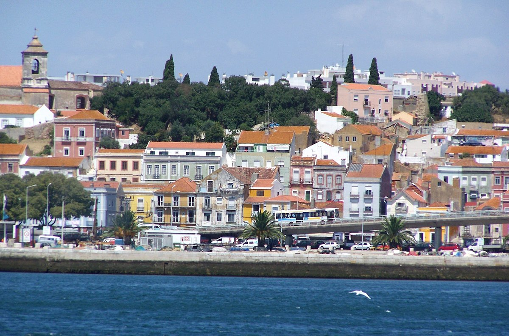
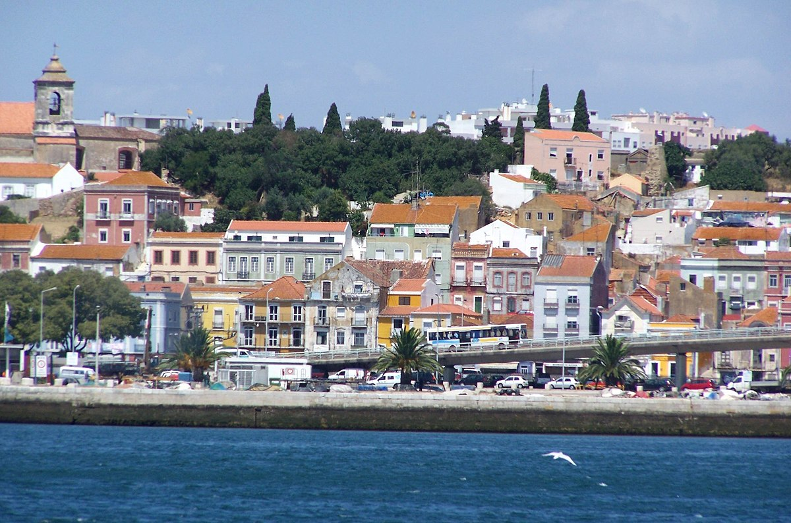

Vídeo
Fotografias


 

Poema
Magro, de olhos azuis, carão moreno,
Bem servido de pés, meão na altura,
Triste de facha, o mesmo de figura,
Nariz alto no meio, e não pequeno;
Incapaz de assistir num só terreno,
Mais propenso ao furor do que à ternura,
Bebendo em níveas mãos por taça escura
De zelos infernais letal veneno;
Devoto incensador de mil deidades
(Digo, de moças mil) num só momento,
E somente no altar amando os frades;
Eis Bocage, em quem luz algum talento;
Saíram dele mesmo estas verdades
um dia em que se achou mais pachorrento.